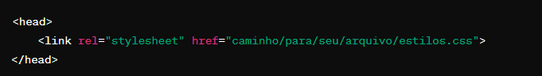
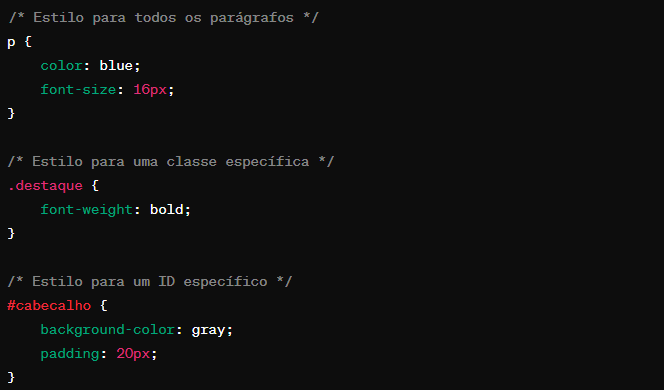
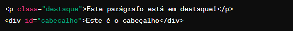

INTRODUÇÃO AO CSS

Aprenda o que é o CSS e como ele funciona. Comece a criar os seus primeiros estilos formatando elementos de texto. O CSS é uma linguagem fundamental para quem quer trabalhar com desenvolvimento web. Abaixo você tem o ponto de partida para o seu aprendizado
A DevMedia oferece um artigo bem explicativo de CSS. Clique no Botão abaixo:
Nesse artigo vamos aprender o que é CSS e como usá-lo
CSS é chamado de linguagem de estilos (Cascading Style Sheet) e é usado para estilizar elementos escritos em uma linguagem de marcação como HTML. O CSS separa o conteúdo da representação visual do site. Pense na decoração da sua página. Utilizando o CSS é possível alterar a cor do texto e do fundo, fonte e espaçamento entre parágrafos.
O CSS foi desenvolvido pelo W3C (World Wide Web Consortium) em 1996, por uma razão bem simples. O HTML não foi projetado para ter tags que ajudariam a formatar a página. Você deveria apenas escrever a marcação para o site.
Como usar o CSS?
Para usar o CSS (Cascading Style Sheets) em seu site, você precisa seguir estas etapas básicas: Criar um arquivo CSS: Crie um arquivo com extensão .css que conterá suas regras de estilo. Por exemplo, você pode chamá-lo de estilos.css. Vincular o arquivo CSS ao seu documento HTML: No cabeçalho head do seu documento HTML, adicione uma tag link para vincular o arquivo CSS. Por exemplo:

Aplicar estilos CSS: No arquivo CSS, você pode adicionar regras de estilo para diferentes elementos HTML. Por exemplo:

Referenciar elementos HTML: No seu documento HTML, você pode referenciar elementos HTML usando classes e IDs definidos no CSS. Por exemplo:

Experimente e ajuste: Experimente diferentes estilos, cores, tamanhos de fonte e outras propriedades CSS para obter o visual desejado. Use ferramentas de desenvolvimento do navegador para inspecionar e ajustar estilos em tempo real. Organize seu CSS: Mantenha seu código CSS organizado e comentado para facilitar a manutenção e o entendimento.
Essas são as etapas básicas para usar o CSS em seu site. Com o tempo e a prática, você se tornará mais confortável com o CSS e poderá criar designs visualmente atraentes e responsivos para seus sites.